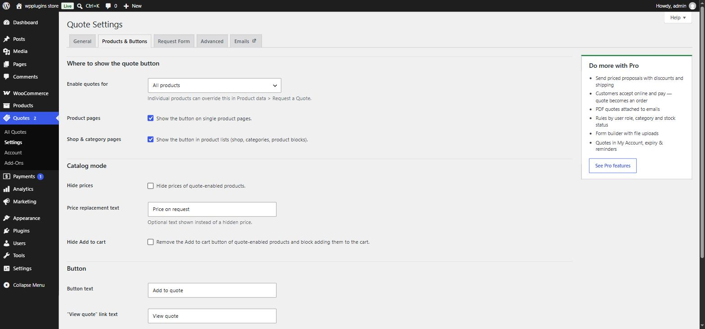
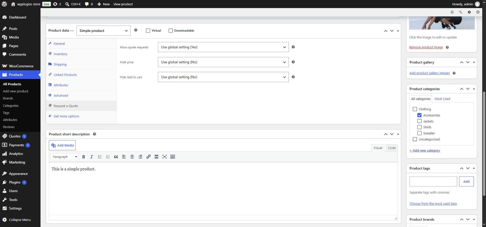
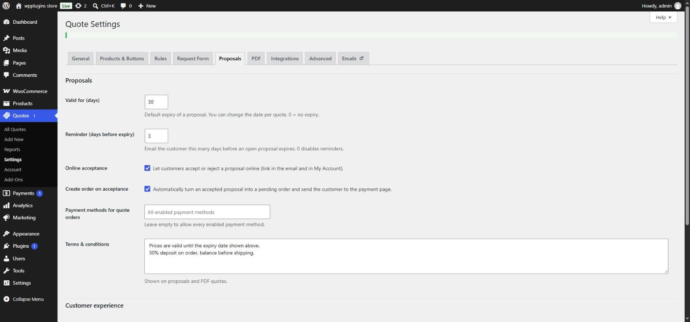

Settings
All settings live in Quotes › Settings. Tabs marked PRO appear when the Pro add-on is active.
General
| Setting | Default | What it does |
|---|---|---|
| Quote page | View Quote | The page that shows the quote list and request form. It must contain the Request a Quote block or the [blraq_quote] shortcode. |
| After adding a product | Stay on the page | Stay on the page and show a "View quote" link, or Go to the quote page. |
| Guest requests | On | Allow visitors who are not logged in to request a quote. When off, guests are asked to log in. |
| Show prices | On | Show product prices and the estimated total on the quote page and in customer emails. Products with hidden prices never show a price. |
| Confirmation message | "Thank you! We have received your quote request…" | Shown on the quote page after a request has been sent. |
Products & Buttons

Where to show the quote button
| Setting | Default | What it does |
|---|---|---|
| Enable quotes for | All products | All products, or Only products where quotes are enabled individually (see per-product settings). |
| Product pages | On | Show the button on single product pages. |
| Shop & category pages | On | Show the button in product lists — shop, categories and WooCommerce product blocks. |
Catalog mode
| Setting | Default | What it does |
|---|---|---|
| Hide prices | Off | Hide the price of quote-enabled products — on product pages, in lists and in the Store API used by blocks. |
| Price replacement text | empty | Optional text shown instead of a hidden price, e.g. "Price on request". |
| Hide Add to cart | Off | Remove the Add to cart button of quote-enabled products and block adding them to the cart (classic, AJAX and block checkout). |
Button
| Setting | Default | What it does |
|---|---|---|
| Button text | Add to quote | Label of the quote button. |
| "View quote" link text | View quote | Link shown after a product is added. |
| Button style | Use theme button style | Match your theme's buttons, or choose Custom colors to set background, text, hover background and hover text colors. |
Per-product settings
Every simple and variable product has a Request a Quote tab in the Product data box. Each option can follow the global setting or override it for that product.

- Allow quote requests — use the global setting, or force Yes / No.
- Hide price — use the global setting, or force Yes / No.
- Hide Add to cart — use the global setting, or force Yes / No.
Tip: set Enable quotes for to "Only products where quotes are enabled individually", then set Allow quote requests to Yes on the products that need quotes.
Request Form
Form fields
The form has six built-in fields: First name, Last name, Email address, Phone, Company and Message. For each one you can:
- turn it on or off (Enabled),
- make it mandatory (Required) — first name, last name and email are required by default,
- change its Label — leave it empty to keep the default, translatable text.
The email address is always enabled and required, because it is how you reply.
The form builder replaces this list: add your own fields (dropdowns, radios, checkboxes, dates, numbers, file uploads), set widths and placeholders and drag to reorder. It also adds Allowed file types and Maximum file size (MB) for uploads.
Privacy & spam protection
| Setting | Default | What it does |
|---|---|---|
| Privacy checkbox | On | Customers must accept your privacy policy before sending. |
| Privacy checkbox text | "I have read and agree to the website [privacy_policy]." | [privacy_policy] becomes a link to the privacy page set in Settings › Privacy. |
| Requests per hour | 5 | Maximum requests one visitor (IP address) can send per hour. 0 disables the limit. A hidden honeypot field and a submit-time check are always active. |
Advanced
| Setting | Default | What it does |
|---|---|---|
| Remove data on uninstall | Off | Permanently delete all quotes and settings when the plugin is deleted. Leave it off to keep your data — recommended when upgrading or reinstalling. Deactivating never deletes anything. |
Emails
The Emails tab links to WooCommerce › Settings › Emails, where each email can be enabled, edited and previewed like any WooCommerce email.
| Sent to | When | |
|---|---|---|
| New quote request | Store | A customer submits a quote request. Replying to it replies to the customer. |
| Quote request received | Customer | Confirmation after they submit a request. |
| Quote reply | Customer | You reply from the quote screen. |
| Quote proposal PRO | Customer | You send a priced proposal with a link to accept it online. |
| Quote expiry reminder PRO | Customer | A few days before an open proposal expires. |
| Quote accepted PRO | Store | A customer accepts a proposal online. |
| Quote declined PRO | Store | A customer declines a proposal online (with their reason, if given). |
Rules PRO
Rules change quote behaviour for groups of visitors and products — for example "wholesale customers see no prices and get a Request wholesale quote button".

- When — Visitor (everyone, guests, logged-in customers or specific user roles), Products, Categories, Tags and Stock status. Product, category and tag lists match if any of them matches; leave all three empty for every product.
- Then — Quote button (show / hide), Hide price, Price replacement text, Hide Add to cart and Button text. "Don't change" keeps the global setting.
- Rules are checked from top to bottom and the first matching rule decides. Drag to reorder.
- Out of stock products — allow quote requests for out-of-stock products (a quote button is shown instead of the unavailable Add to cart).
Proposals PRO

| Setting | Default | What it does |
|---|---|---|
| Valid for (days) | 30 | Default expiry of a proposal; you can change the date per quote. 0 = no expiry. |
| Reminder (days before expiry) | 3 | Email the customer this many days before an open proposal expires. 0 disables reminders. |
| Online acceptance | On | Let customers accept or reject a proposal online (link in the email and in My Account). |
| Create order on acceptance | On | Turn an accepted proposal into a pending order and send the customer to the payment page. |
| Payment methods for quote orders | All enabled | Limit which payment methods can pay quote orders. Leave empty to allow every enabled method. |
| Terms & conditions | empty | Shown on proposals and PDF quotes. |
| My Account | On | Show a "Quotes" section in My Account with history, proposals and PDF downloads. |
| Target price | Off | Let customers suggest their own unit price for each product in the quote list. |
| Cart to quote | Off | Show a "Request a quote for this cart" button on the cart page. |
| Empty cart after moving | On | Remove the products from the cart once they are moved to the quote list. |
PDF PRO
| Setting | Default | What it does |
|---|---|---|
| Enable PDF | On | Generate PDF quotes — download from the quote screen and from My Account. |
| Attach to proposal email | On | Attach the PDF to the proposal email. |
| Logo URL | empty | A PNG or JPG from your Media Library — paste the file URL. |
| Company details | empty | Name, address, VAT number… shown at the top of the PDF. |
| Footer | empty | Text at the bottom of every page. |
| Paper size | A4 | A4 or US Letter. |
Integrations PRO
CAPTCHA
Choose Cloudflare Turnstile or Google reCAPTCHA v3 and paste the Site key and Secret key from the provider. For reCAPTCHA v3 you can set the minimum score (default 0.5).
Webhooks
Send quote events (quote.created, quote.status_changed) as JSON to Zapier, Make, a CRM or your own endpoint. Enter one HTTPS URL per line in Delivery URLs. With a Signing secret, every request carries an X-BLRAQ-Signature header. See Developers › Webhooks for the payload and how to verify it.
Which setting wins?
From strongest to weakest:
- Per-product settings on the product's Request a Quote tab.
- Rules PRO — the first matching rule.
- Global settings in Products & Buttons.